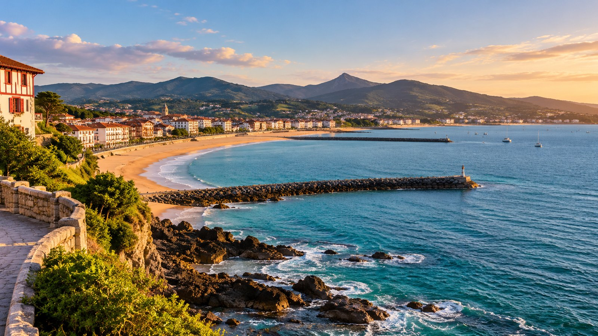

500m
Les Premiers Flots
Une première approche de la nage en eau libre pour les nageurs autonomes, avec un cadre d'organisation et de sécurité adapté.
En savoir plus
Saint-Jean-de-Luz · Côte basque
Une rencontre de nage en eau libre imaginée entre défi sportif, esprit de baie et attention portée au milieu marin.
01 — Le projet universitaire
Les Courants de la Baie est un concept d'événement de nage en eau libre imaginé au Pays basque. Il met en scène une discipline où l'effort individuel rencontre le paysage, la météo, la sécurité et le collectif.
Le projet sert de support à une réflexion sur la conception d'un événement sportif : définir des publics, structurer une journée, rendre l'information accessible et intégrer les enjeux environnementaux et de prévention dès la préparation.
Explorer le concept02 — L'étudiant
Je m'appelle Enguerrand Gonzaga, j'ai 24 ans et je suis étudiant en Master 2 STAPS MOS à l'Université Paris Nanterre. Dans le cadre de ce projet universitaire, j'ai imaginé « Les Courants de la Baie », un événement fictif de nage en eau libre sur la côte basque.
Ce travail me permet d'explorer les différentes dimensions de la conception d'un événement sportif : définir un concept, organiser le déroulement d'une journée, présenter des informations utiles aux participants et prendre en compte les enjeux de sécurité, d'accessibilité et de respect du milieu naturel.
Projet universitaire fictif — année universitaire à compléter si elle doit figurer sur le rendu.

03 — Trois façons de se jeter à l'eau
Des formats pensés pour matérialiser des niveaux d'expérience différents. Toute participation réelle nécessiterait des critères, parcours et mesures de sécurité validés.
500m
Une première approche de la nage en eau libre pour les nageurs autonomes, avec un cadre d'organisation et de sécurité adapté.
En savoir plus1,5km
Un format pour les nageurs ayant déjà de l'expérience en milieu naturel et souhaitant se fixer un objectif personnel.
En savoir plus3km
Une distance plus longue imaginée pour un public expérimenté, sous réserve d'une étude de faisabilité et d'un dispositif de sécurité.
En savoir plusLe mouvement est collectif
Consulte le programme, les informations pratiques et la maquette de préinscription pour découvrir la logique complète du projet.
Parcourir le programme